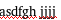
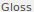
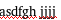
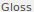
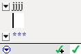
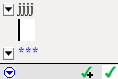

import a_setup
from test_helper import TestHelper
from Regionplus import Regionplus
helper = TestHelper("check_word_gloss")
# Make sure the word exists
helper.Click( , "Couldn't find 'Lexicon' button")
helper.Click(
, "Couldn't find 'Lexicon' button")
helper.Click( , "Couldn't find 'Lexicon Edit' button")
helper.Exists(
, "Couldn't find 'Lexicon Edit' button")
helper.Exists( , "'asdfgh' word does not exist")
# Enter text if it's not there
helper.Click(, "'Texts & Words' not found")
helper.Click(Pattern().similar(0.90), "'Baseline' tab not found")
helper.Click(, "Blank space not found") # Move cursor to blank space
if not exists():
paste("asdfgh jjjj")
# View Gloss tab, make sure gloss is suggested and focus shifts
helper.Click(Pattern().similar(0.81), "'Gloss' tab not found")
hover() # Move to blank space so the hovertext doesn't appear
wait(2)
helper.Exists(, "'hahaha' gloss not suggested for 'asdfgh'")
helper.Click(Pattern(
, "'asdfgh' word does not exist")
# Enter text if it's not there
helper.Click(, "'Texts & Words' not found")
helper.Click(Pattern().similar(0.90), "'Baseline' tab not found")
helper.Click(, "Blank space not found") # Move cursor to blank space
if not exists():
paste("asdfgh jjjj")
# View Gloss tab, make sure gloss is suggested and focus shifts
helper.Click(Pattern().similar(0.81), "'Gloss' tab not found")
hover() # Move to blank space so the hovertext doesn't appear
wait(2)
helper.Exists(, "'hahaha' gloss not suggested for 'asdfgh'")
helper.Click(Pattern( ).targetOffset(-16,0), "Drop down menu not found")
helper.Click(, "'Noun' not found")
type(Key.ENTER)
helper.Exists(Pattern().similar(0.86), "'jjjj' word not in focus in Gloss tab")
# View Analyze tab, make sure focus is kept
helper.Click(Pattern(
).targetOffset(-16,0), "Drop down menu not found")
helper.Click(, "'Noun' not found")
type(Key.ENTER)
helper.Exists(Pattern().similar(0.86), "'jjjj' word not in focus in Gloss tab")
# View Analyze tab, make sure focus is kept
helper.Click(Pattern( ).similar(0.90), "'Analyze' tab not found")
hover(
).similar(0.90), "'Analyze' tab not found")
hover( ) # Move to blank space so the hovertext doesn't appear
helper.Exists(Pattern().similar(0.80), "'jjjj' word not in focus in Analyze tab")
# Go back to Lexicon Edit
helper.Click(, "Couldn't find 'Lexicon' button")
helper.Click(, "Couldn't find 'Lexicon Edit' button")
helper.write_success()
) # Move to blank space so the hovertext doesn't appear
helper.Exists(Pattern().similar(0.80), "'jjjj' word not in focus in Analyze tab")
# Go back to Lexicon Edit
helper.Click(, "Couldn't find 'Lexicon' button")
helper.Click(, "Couldn't find 'Lexicon Edit' button")
helper.write_success()